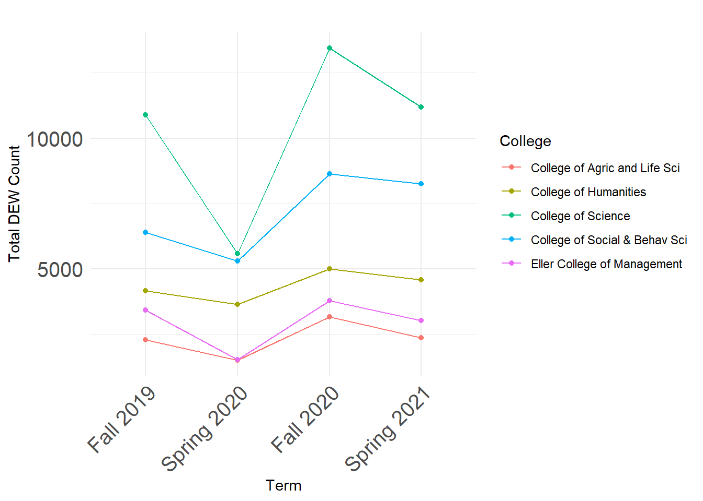
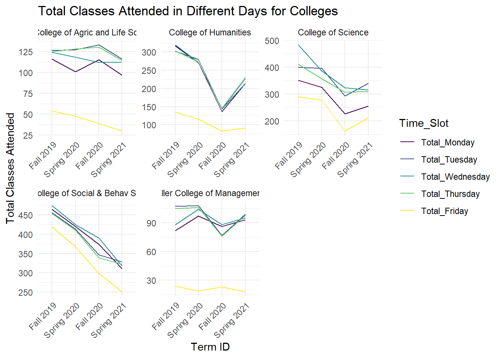
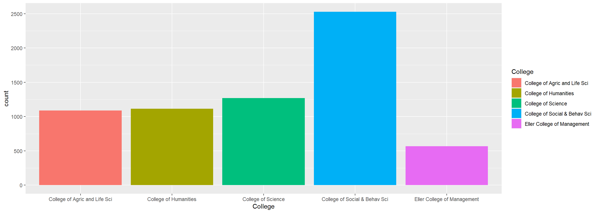

suppressWarnings(library(tidyverse))
library(knitr)
library(lubridate)
library(ggplot2)
library(dplyr)Time Series Analysis
Dataset Setup
Load data
# read in data
study_data <- read.csv("data/study_data.csv")
kable(head(study_data))| X | Course.Identifier | College | Department | Merged | Subject.Code | Catalog.Number | Course.Description | Course.Level | Total.Student.Count | D_GRADE_COUNT | FAIL_GRADE_COUNT | WITHDRAW_GRADE_COUNT | DEW_COUNT | PASS_GRADE_COUNT | WITHDRAW_FULLMED_GRADE_COUNT | INCOMPLETE_UNGRADED_COUNT | TERM_LD | ACAD_YR_SID | Percent.D.Grade | Percent.E.Grade | Percent.W.Grade | Percent.DEW | Percent.Passed | Per.Full..Medical.Withdrawal | Per.Ungraded..Incomplete | P.F.Opt | Units | Mode | Class.. | Sections | Total.Enroll | Max.Enroll | Rm.Cap | Early_Morning | Mid_Morning | Early_Afternoon | Mid_Afternoon | Evening | Asynchronous | Monday | Tuesday | Wednesday | Thursday | Friday | Saturday | Sunday | Laboratory | Lecture | Colloquim | Seminar | Workshop | Discussion | Studio | Practicum | In_Person | Full_Online | IntractTV | Hybrid | Live_Online | Reg_Session | First_Half_Session | Second_Half_Session | First_Third_Session | Second_Third_Session | Third_Third_Session | Ten_Week | Thirteen_Week | Other | College_Number |
|---|---|---|---|---|---|---|---|---|---|---|---|---|---|---|---|---|---|---|---|---|---|---|---|---|---|---|---|---|---|---|---|---|---|---|---|---|---|---|---|---|---|---|---|---|---|---|---|---|---|---|---|---|---|---|---|---|---|---|---|---|---|---|---|---|---|---|---|---|---|
| 1 | Fall 2019_ACBS_102L | College of Agric and Life Sci | Animal&Biomedical Sciences-Ins | ACBS_102L | ACBS | 102L | Intro to Animal Sci Lab | Lower Division | 250 | 8 | 7 | 3 | 18 | 229 | 3 | 0 | Fall 2019 | 2020 | 3.2 | 2.8 | 1.2 | 7.2 | 91.6 | 1.2 | 0 | 1 | In Person | 450809 | 8 | 250 | 280 | 8 | 0 | 0 | 8 | 0 | 0 | 0 | 0 | 4 | 0 | 4 | 0 | 0 | 0 | 8 | 0 | 0 | 0 | 0 | 0 | 0 | 0 | 8 | 0 | 0 | 0 | 0 | 8 | 0 | 0 | 0 | 0 | 0 | 0 | 0 | 0 | 1 | |
| 2 | Fall 2019_ACBS_102R | College of Agric and Life Sci | Animal&Biomedical Sciences-Ins | ACBS_102R | ACBS | 102R | Introd to Animal Science | Lower Division | 267 | 7 | 10 | 2 | 19 | 244 | 4 | 0 | Fall 2019 | 2020 | 2.6 | 3.7 | 0.7 | 7.1 | 91.4 | 1.5 | 0 | 3 | In Person | 41166 | 1 | 267 | 299 | 300 | 1 | 0 | 0 | 0 | 0 | 0 | 0 | 1 | 0 | 1 | 0 | 0 | 0 | 0 | 1 | 0 | 0 | 0 | 0 | 0 | 0 | 1 | 0 | 0 | 0 | 0 | 1 | 0 | 0 | 0 | 0 | 0 | 0 | 0 | 0 | 1 | |
| 3 | Fall 2019_ACBS_142 | College of Agric and Life Sci | Animal&Biomedical Sciences-Ins | ACBS_142 | ACBS | 142 | Intro Anml Racing Indus | Lower Division | 28 | 0 | 2 | 0 | 2 | 26 | 0 | 0 | Fall 2019 | 2020 | 0.0 | 7.1 | 0.0 | 7.1 | 92.9 | 0.0 | 0 | 2 | In Person | 25697 | 1 | 28 | 20 | 80 | 1 | 0 | 0 | 0 | 0 | 0 | 1 | 0 | 1 | 0 | 0 | 0 | 0 | 0 | 1 | 0 | 0 | 0 | 0 | 0 | 0 | 1 | 0 | 0 | 0 | 0 | 1 | 0 | 0 | 0 | 0 | 0 | 0 | 0 | 0 | 1 | |
| 4 | Fall 2019_ACBS_160D1 | College of Agric and Life Sci | Animal&Biomedical Sciences-Ins | ACBS_160D1 | ACBS | 160D1 | Hum+Anml Interl Dom-Pres | Lower Division | 681 | 30 | 72 | 8 | 110 | 561 | 10 | 0 | Fall 2019 | 2020 | 4.4 | 10.6 | 1.2 | 16.2 | 82.4 | 1.5 | 0 | 3 | In Person | 95423 | 2 | 481 | 707 | 912 | 1 | 1 | 0 | 0 | 0 | 0 | 2 | 0 | 2 | 0 | 2 | 0 | 0 | 0 | 2 | 0 | 0 | 0 | 0 | 0 | 0 | 2 | 0 | 0 | 0 | 0 | 2 | 0 | 0 | 0 | 0 | 0 | 0 | 0 | 0 | 1 | |
| 5 | Fall 2019_ACBS_160D1 | College of Agric and Life Sci | Animal&Biomedical Sciences-Ins | ACBS_160D1 | ACBS | 160D1 | Hum+Anml Interl Dom-Pres | Lower Division | 681 | 30 | 72 | 8 | 110 | 561 | 10 | 0 | Fall 2019 | 2020 | 4.4 | 10.6 | 1.2 | 16.2 | 82.4 | 1.5 | 0 | 3 | FullOnline | 67075 | 1 | 200 | 200 | 1 | 0 | 0 | 0 | 0 | 0 | 1 | 0 | 0 | 0 | 0 | 0 | 0 | 0 | 0 | 1 | 0 | 0 | 0 | 0 | 0 | 0 | 0 | 1 | 0 | 0 | 0 | 1 | 0 | 0 | 0 | 0 | 0 | 0 | 0 | 0 | 1 | |
| 6 | Fall 2019_ACBS_195F | College of Agric and Life Sci | Animal&Biomedical Sciences-Ins | ACBS_195F | ACBS | 195F | Careers/Veterinary Sci | Lower Division | 205 | 11 | 17 | 1 | 29 | 173 | 3 | 0 | Fall 2019 | 2020 | 5.4 | 8.3 | 0.5 | 14.1 | 84.4 | 1.5 | 0 | 1 | In Person | 38050 | 1 | 205 | 190 | 300 | 0 | 1 | 0 | 0 | 0 | 0 | 0 | 0 | 1 | 0 | 0 | 0 | 0 | 0 | 0 | 0 | 0 | 0 | 0 | 0 | 0 | 1 | 0 | 0 | 0 | 0 | 1 | 0 | 0 | 0 | 0 | 0 | 0 | 0 | 0 | 1 |
filter data
# Filter the data for the specified colleges and TERM_LD values
selected_colleges <- c('College of Agric and Life Sci', 'College of Humanities','College of Science', 'College of Social & Behav Sci', 'Eller College of Management')
selected_terms <- c('Fall 2018', 'Spring 2019', 'Fall 2019', 'Spring 2020', 'Fall 2020', 'Spring 2021')
filtered_data <- study_data %>%
filter(College %in% selected_colleges & TERM_LD %in% selected_terms)#DEW count (K) for 5 colleges over semesters - Utkarsha
# Aggregate the data
aggregated_data <- filtered_data %>%
group_by(College, TERM_LD) %>%
summarise(DEW_COUNT = sum(DEW_COUNT))`summarise()` has grouped output by 'College'. You can override using the
`.groups` argument.# Convert TERM_LD to a factor with a specific order
filtered_data$TERM_LD <- factor(filtered_data$TERM_LD, levels = selected_terms)
# Save the plot to a folder named "images"
plot <- ggplot(aggregated_data, aes(x = factor(TERM_LD, levels = selected_terms), y = DEW_COUNT, color = College, group = College)) +
geom_line() +
geom_point() +
labs(
title = "",
x = "Term",
y = "Total DEW Count"
) +
theme_minimal() +
theme(axis.text.x = element_text(angle = 45, hjust = 1, size=15), axis.text.y = element_text(size=15))
# Save the plot as a PNG file
ggsave("images/TSA1.png", plot = plot)Saving 7 x 5 in imageplot
#DEW counts (H, I, J) for 5 colleges (Facet) over semesters - Dong
# Aggregate the data by College, TERM_LD, and calculate the sum of D_GRADE_COUNT, FAIL_GRADE_COUNT, and WITHDRAW_GRADE_COUNT
aggregated_data <- filtered_data %>%
group_by(College, TERM_LD) %>%
summarise(D_GRADE_COUNT = sum(D_GRADE_COUNT),
FAIL_GRADE_COUNT = sum(FAIL_GRADE_COUNT),
WITHDRAW_GRADE_COUNT = sum(WITHDRAW_GRADE_COUNT))`summarise()` has grouped output by 'College'. You can override using the
`.groups` argument.# Convert TERM_LD to a factor with a specific order
aggregated_data$TERM_LD <- factor(aggregated_data$TERM_LD, levels = selected_terms)
# Create a facet plot with lines for time series analysis
plot2<-ggplot(aggregated_data, aes(x = TERM_LD, group = College)) +
geom_line(aes(y = D_GRADE_COUNT, color = "D_GRADE_COUNT"), size = 1) +
geom_line(aes(y = FAIL_GRADE_COUNT, color = "FAIL_GRADE_COUNT"), size = 1) +
geom_line(aes(y = WITHDRAW_GRADE_COUNT, color = "WITHDRAW_GRADE_COUNT"), size = 1) +
geom_point(aes(y = D_GRADE_COUNT, color = "D_GRADE_COUNT"), size = 2) +
geom_point(aes(y = FAIL_GRADE_COUNT, color = "FAIL_GRADE_COUNT"), size = 2) +
geom_point(aes(y = WITHDRAW_GRADE_COUNT, color = "WITHDRAW_GRADE_COUNT"), size = 2) +
labs(title = "",
x = "Term",
y = "Total Count",
color = "Category") +
scale_color_manual(values = c("D_GRADE_COUNT" = "blue", "FAIL_GRADE_COUNT" = "red", "WITHDRAW_GRADE_COUNT" = "green")) +
facet_wrap(~College) +
theme_minimal()+
theme(axis.text.x = element_text(angle = 45, hjust = 1, size=15), axis.text.y = element_text(size=15),
strip.text = element_text(size = 15, angle = 0, hjust = 0.5),
legend.position = "bottom", # Place legend at the bottom
legend.direction = "horizontal", # Display legend horizontally
legend.box = "horizontal") # Align legend items horizontallyWarning: Using `size` aesthetic for lines was deprecated in ggplot2 3.4.0.
ℹ Please use `linewidth` instead.# Save the plot as a PNG file
ggsave("images/TSA2.png", plot = plot2, width = 12, height = 8, units = "in")#DEW counts (F) based on the division level over semesters - Anjani
# Rename the 'course.level' column to 'Course_Level'
filtered_data <- filtered_data %>%
rename(Course_Level = Course.Level)
grouped_data <- filtered_data %>%
group_by(College, TERM_LD, Course_Level)
# Convert TERM_LD to factor with ordered levels
grouped_data$TERM_LD <- factor(
grouped_data$TERM_LD,
levels = selected_terms,
ordered = TRUE
)
# Summarize the grouped data to get the desired summary statistics
summary <- grouped_data %>%
summarise(
count = n()
)`summarise()` has grouped output by 'College', 'TERM_LD'. You can override
using the `.groups` argument.# Plotting the facet line graph with adjusted strip text labels and legend at the bottom
plot3 <- ggplot(summary, aes(x = TERM_LD, y = count, group = Course_Level, color = Course_Level)) +
geom_line() +
geom_point() +
facet_wrap(~College) +
labs(
title = "",
x = "Term",
y = "Count"
) +
theme_minimal() +
theme(axis.text.x = element_text(angle = 45, hjust = 1, size=15), axis.text.y = element_text(size=15),
strip.text = element_text(size = 15, angle = 0, hjust = 0.5),
legend.position = "bottom", # Place legend at the bottom
legend.direction = "horizontal", # Display legend horizontally
legend.box = "horizontal") # Align legend items horizontally
# Save the plot as a PNG file
ggsave("images/TSA3.png", plot = plot3, width = 12, height = 8, units = "in")study_data <- read.csv("data/study_data.csv")
# Filter the data for the specified colleges and TERM_LD values
study_data_selected_terms <- c('Fall 2018', 'Spring 2019', 'Fall 2019', 'Spring 2020', 'Fall 2020', 'Spring 2021')
study_data_filtered_data <- study_data %>%
filter(College %in% selected_colleges & TERM_LD %in% study_data_selected_terms)#How time affects classes (columns AH to AM) for different colleges (the five mentioned above)
# Create the table for each time slot
time_slots <- c("Early_Morning", "Mid_Morning", "Early_Afternoon", "Mid_Afternoon", "Evening", "Asynchronous")
tables_list <- lapply(time_slots, function(slot) {
table_data <- study_data_filtered_data%>%
group_by(College, TERM_LD) %>%
summarise(Total_Classes_Attended = sum(!!sym(slot), na.rm = TRUE))
})`summarise()` has grouped output by 'College'. You can override using the
`.groups` argument.
`summarise()` has grouped output by 'College'. You can override using the
`.groups` argument.
`summarise()` has grouped output by 'College'. You can override using the
`.groups` argument.
`summarise()` has grouped output by 'College'. You can override using the
`.groups` argument.
`summarise()` has grouped output by 'College'. You can override using the
`.groups` argument.
`summarise()` has grouped output by 'College'. You can override using the
`.groups` argument.# Modify column names of the tables within tables_list
for (i in 1:length(tables_list)) {
col_name <- paste("Total ", time_slots[i], sep = "") # Generate new column name
names(tables_list[[i]])[3] <- col_name # Assign new column name to the last column
}
# Merge tables into a single table
merged_table <- reduce(tables_list, full_join, by = c("College", "TERM_LD"))
# Melt the data for plotting
merged_table_long <- tidyr::pivot_longer(merged_table, cols = starts_with("Total"),
names_to = "Time_Slot", values_to = "Total_Classes_Attended")
# Convert TERM_LD to factor with ordered levels
merged_table_long$TERM_LD <- factor(
merged_table_long$TERM_LD,
levels = study_data_selected_terms,
ordered = TRUE
)
# Plotting the facet plot with chronological x-axis
plot4<-ggplot(merged_table_long, aes(x = TERM_LD, y = Total_Classes_Attended, color = Time_Slot, group = Time_Slot)) +
geom_line() +
facet_wrap(~ College) +
labs(
title = "",
x = "Term ID",
y = "Total Classes Attended"
) +
theme_minimal() +
theme(axis.text.x = element_text(angle = 45, hjust = 1, size=15), axis.text.y = element_text(size=15),
strip.text = element_text(size = 15, angle = 0, hjust = 0.5),
legend.position = "bottom", # Place legend at the bottom
legend.direction = "horizontal", # Display legend horizontally
legend.box = "horizontal") # Align legend items horizontally
# Save the plot as a PNG file
ggsave("images/TSA4.png", plot = plot4, width = 10, height = 8, units = "in")#Total number of classes per week (AN to AT) - Anjani
# Create a table for each day of the week
weekdays <- c("Monday", "Tuesday", "Wednesday", "Thursday", "Friday")
tables_list <- lapply(weekdays, function(slot) {
table_data <- study_data_filtered_data%>%
group_by(College, TERM_LD) %>%
summarise(Total_Classes_Attended = sum(!!sym(slot), na.rm = TRUE))
})`summarise()` has grouped output by 'College'. You can override using the
`.groups` argument.
`summarise()` has grouped output by 'College'. You can override using the
`.groups` argument.
`summarise()` has grouped output by 'College'. You can override using the
`.groups` argument.
`summarise()` has grouped output by 'College'. You can override using the
`.groups` argument.
`summarise()` has grouped output by 'College'. You can override using the
`.groups` argument.# Modify column names of the tables within tables_list
for (i in 1:length(tables_list)) {
col_name <- paste("Total_", weekdays[i], sep = "") # Generate new column name
names(tables_list[[i]])[3] <- col_name # Assign new column name to the last column
}
# Merge tables into a single table
merged_table <- reduce(tables_list, full_join, by = c("College", "TERM_LD"))
# Melt the data for plotting
merged_table_long <- tidyr::pivot_longer(merged_table, cols = starts_with("Total"), names_to = "Time_Slot", values_to = "Total_Classes_Attended")
# Convert TERM_LD to factor with ordered levels
merged_table_long$TERM_LD <- factor(
merged_table_long$TERM_LD,
levels = study_data_selected_terms,
ordered = TRUE
)
# Convert Time_Slot to factor with ordered levels
merged_table_long$Time_Slot <- factor(
merged_table_long$Time_Slot,
levels = paste("Total_", weekdays, sep = ""),
ordered = TRUE
)
# Plotting the facet plot
ggplot(merged_table_long, aes(x = TERM_LD, y = Total_Classes_Attended, color = Time_Slot, group = Time_Slot)) +
geom_line() +
facet_wrap(~ College, scales = "free") +
labs(
title = "Total Classes Attended in Different Days for Colleges",
x = "Term ID",
y = "Total Classes Attended"
) +
theme_minimal() +
theme(axis.text.x = element_text(angle = 45, hjust = 1))
#Total Number of students enrolled in different types of teaching format (columns AU to BB) for different colleges - Dong
# Only look at five colleges: Agriculture, Social and Behavioral, Eller, Humanities, Science
study_data<- study_data%>%
filter(College == "College of Agric and Life Sci" | College == "Eller College of Management"| College == "College of Social & Behav Sci"| College == "College of Science"| College == "College of Humanities")# total number of courses by colleges
study_data%>%
group_by(College) %>%
ggplot(aes( x = College,
fill = College))+
geom_bar(position = "dodge")
#3 Mean student enrollment in different types of teaching format (columns AU to BB) by colleges - Dong
# Reshape data and calculate mean enrollment
long_data <- study_data%>%
pivot_longer(
cols = Laboratory:Practicum,
names_to = "TeachingFormat",
values_to = "Enrollment"
) %>%
group_by(College, TeachingFormat) %>%
summarise(MeanEnrollment = mean(Enrollment, na.rm = TRUE))`summarise()` has grouped output by 'College'. You can override using the
`.groups` argument.# Create a plot with facets for each college, adding colors for each TeachingFormat
ggplot(long_data, aes(x = TeachingFormat, y = MeanEnrollment, fill = TeachingFormat)) +
geom_bar(stat = "identity") +
facet_wrap(~ College) +
theme(axis.text.x = element_text(angle = 45, hjust = 1, size=4)) +
scale_fill_brewer(palette = "Set1")